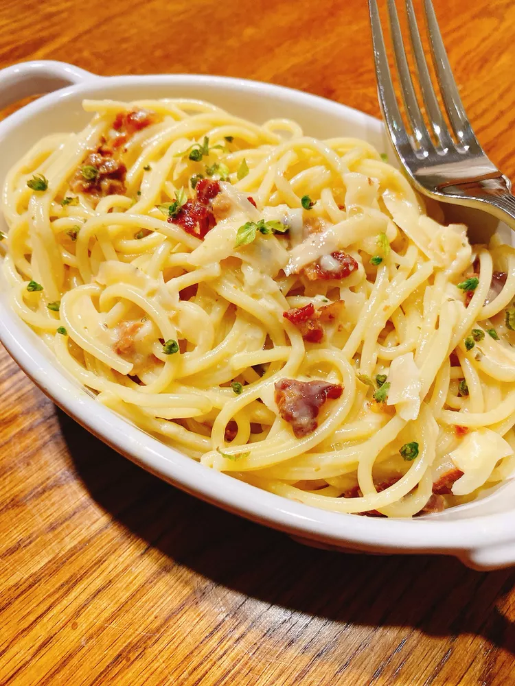

Greek Yogurt Carbonara

Description
This version of carbonara is decadent but uses Greek yogurt for the creamy aspect.
Ingredients
- ¼ pound turkey bacon
- ¼ pound angel hair pasta
- ¼ cup plain Greek yogurt
- ¼ cup grated Parmesan cheese
- 1 egg
- ¼ teaspoon Italian seasoning
- ¼ teaspoon crushed red pepper flakes
- 1 pinch garlic salt
- 1 pinch onion powder
Steps
- Place turkey bacon in a large skillet and cook over medium-high heat, turning occasionally, until evenly browned, about 5 minutes. Drain, let cool, and crumble.
- Fill a large pot with lightly salted water and bring to a rolling boil. Stir in angel hair pasta, bring back to a boil, and cook over medium heat until tender yet firm to the bite, 4 to 5 minutes.
- Meanwhile, whisk Greek yogurt, Parmesan cheese, egg, Italian seasoning, red pepper flakes, garlic salt, and onion powder together in a bowl.
- Drain pasta and return to the pot. Pour egg mixture over the pasta while still warm. Cook and stir over low heat for 1 to 2 minutes. Add bacon pieces and toss to coat.